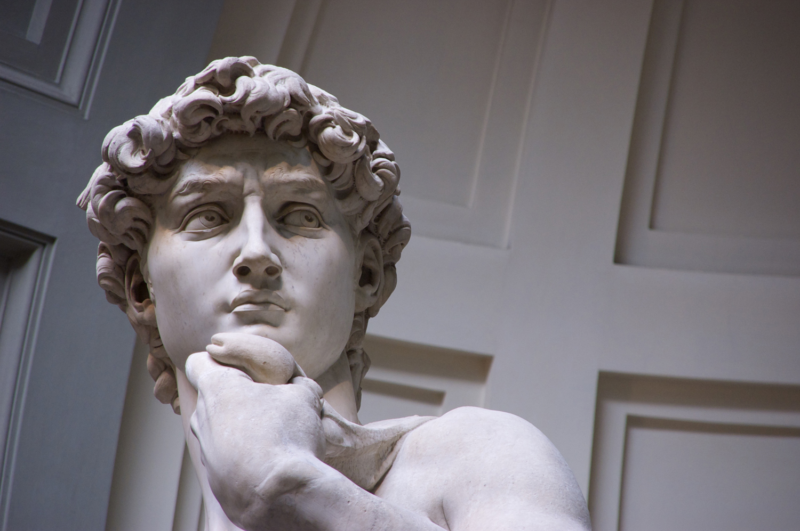
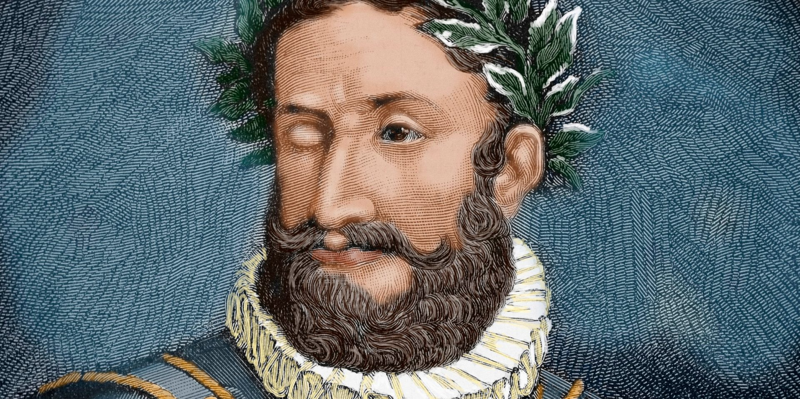
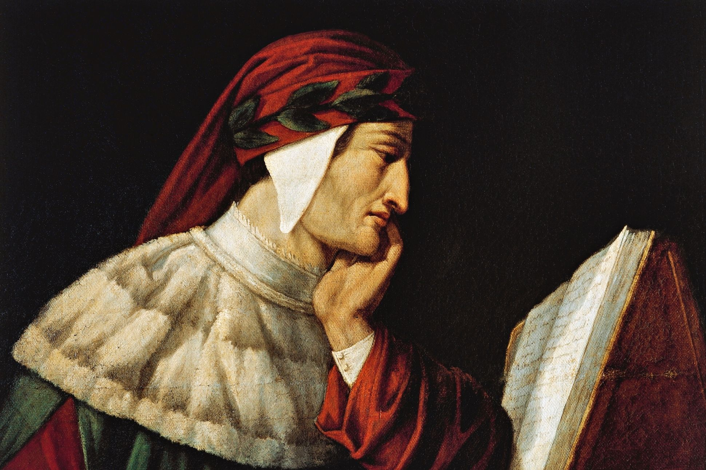
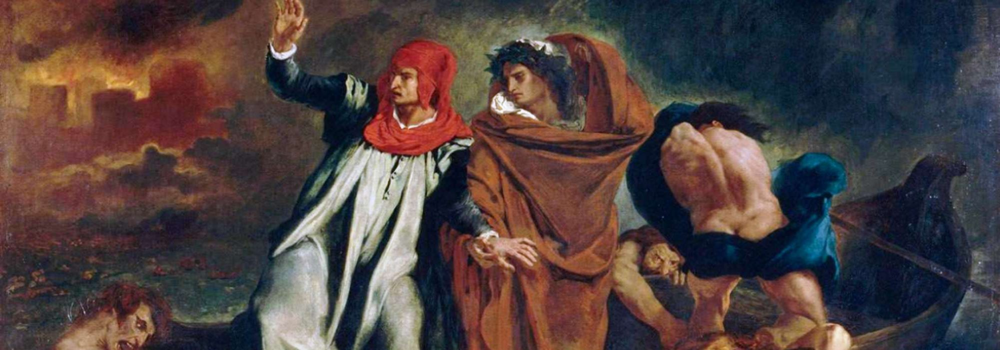

Contexto histórico do Classicismo
O Classicismo ou Renascimento ocorre e marca o fim da idade média e início da idade moderna, um período de intensas transformações na filosofia, arte, cultura e política. Neste período, acontecem diversos eventos históricos importantes, como as grandes navegações, a reforma protestante, o fim do feudalismo com a entrada do capitalismo e a invenção da imprensa. Detalhe que no Brasil, esse movimento ficou conhecido como Quinhentismo, o que nos remete a obra Os Lusíadas, de Luís de Camões.
Características do Classicismo
Nesse período se destaca a razão, de forma com que os autores e artistas dessa época vão tentar explicar sentimentos humanos de forma racional. São retomados conceitos da antiguidade, de modo a manter a simetria, equilíbrio e a harmonia de formas. O movimento também tem o culto a deuses pagãos e tem como pilar o antropocentrismo, onde tomam a figura do ser humano como parâmetro para perfeição, e não alguma divindade ou algo maior, podemos perceber isso nas esculturas de Michelangelo:

De forma resumida, podemos citar as características do Classicismo como:
• Antropocentrismo
• Equilíbrio
• Harmonia
• Racionalismo
• Cientificismo
• Paganismo
• Mitologia greco-romana
• Antiguidade clássica
• Idealização de beleza
Principais autores e obras
Luís de Camões
Luís de Camões nasceu em Lisboa, onde cresceu e começou a se interessar pela literatura, mas ao sofrer uma desilusão amorosa, se torna um soldado do Exército Coroa Portuguesa e embarca para a África, onde perde um dos olhos. Logo após retorna à Lisboa, posteriormente embarcando em diversas expedições militares. Descrito como problemático, foi preso tanto em Portugal quanto no Oriente, e foi na prisão onde escreveu sua maior obra, "Os Lusíadas", a qual publicou quando retornou ao seu país natal, mas que só teve seu devido reconhecimento após sua morte, que foi causada pela peste negra.

Trecho do poema épico "Os Lusíadas"
O poema é dividido em dez cantos, sendo composto de 8816 versos decassílabos e 1102 estrofes de oito versos. Acima dos dez cantos, a obra se divide em:
• Proposição (introdução da obra, apresentando o tema e os personagens, Canto 1)
• Invocação (nessa parte são invocadas as ninfas do Tejo como forma de inspiração do poeta, Canto 1)
• Dedicatória (parte que dedica a obra ao rei Dom Sebastião, Canto 1)
• Narração (narração da viagem de Vasco da Gama e as ações dos personagens, Canto 1 ao 10)
• Epílogo (conclusão do poema, Canto 10)
Segue um trecho do Canto 4:
Nocturna sombra e sibilante vento,
Traz a manhã serena claridade,
Esperança de porto e salvamento;
Aparta o Sol a negra escuridade,
Removendo o temor ao pensamento:
Assi no Reino forte aconteceu
Despois que o Rei Fernando faleceu.
Dante Alighieri
Dante Alighieri nasceu em Florença em boa família, onde teve uma boa educação, estudando teologia, artes, letras e ciências. Após a morte dos seus pais, foi abandonado por seus parentes e posteriormente exilado da sua terra natal por gastar dinheiro público. Casou com uma mulher com a qual teve vários filhos, mas o amor de sua vida foi Beatrice Portinari, que faleceu precocemente com apenas 25 anos, e é ela quem inspira diversas de suas obras.

A Divina Comédia
O poema foi originalmente intitulado como "Comédia", posteriormente intitulado como "A Divina Comédia" por Giovanni Boccaccio. A obra é narrada em primeira pessoa, onde Dante é o personagem principal e o próprio narrador. Assim como em "Os Lusíadas", o poema também é dividido em cantos, além de também ter um maior agrupamento, divididos em Inferno, Purgatório e Paraíso. Durante a história, antes de Dante ir para o paraíso, tem de passar pelo Inferno, onde descreve como é dividido e informa as punições para cada tipo de pecado, dividindo os condenados em círculos, onde quanto mais ao centro, maior o pecado e consequentemente, o sofrimento. Logo após entra na porta para o purgatório, onde paga por seus pecados e depois vai ao paraíso. O autor inclui na obra vários personagens, conflitos e governos reais da época em que viveu em Florença, e os pune ou vangloria como quer, encontrando-os no inferno, no purgatório ou paraíso.
